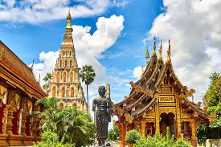
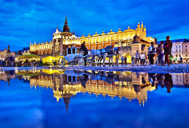

Solo travel can feel daunting, especially if it’s your first time. That is why, after 7 years of travel and over 60 countries later, I’ve created this list with the 15 best first time solo travel destinations.
There are so many choices in the world for places to go and if you’re not too sure where to even start looking, it can be a little too much to comprehend. I remember my first time solo, I was nervous, excited and a little overwhelmed. I went in with no research, and while I enjoyed my first solo trip (which was to Luxembourg), I definitely could have picked somewhere a little more catered to solo travellers. Ultimately, the destination you choose will determine how much you enjoy your first solo trip, so it’s imperative that you pick wisely, with this post, I hope I can give you a guiding hand to the best choices!
Here are the 10 best first time solo travel destinations.
These places are perfect for your first ever solo trip, being: safe, fun, with plenty of other travellers and lots to see/do/eat! What more could you want for your first solo travel adventure? As someone who has solo travelled for 6 years, I have been to my fair share of places and these are destinations I can wholeheartedly recommend for a first timer.
These 10 best first time solo travel destinations hit the main criteria I mark each destination against: safety, activities, easily accessible, affordable, communication and being busy with other travellers. These criteria are what I think are the most important for not only feeling safe and comfortable but ultimately having the best time possible as a newbie solo traveller.

WHAT IS THE CRITERIA
FOR
THE BEST FIRST TIME SOLO TRAVEL DESTINATION?
SAFETY :
In saying this, safety precautions should be practiced everywhere you travel! I can only ever speak from my personal experience as a solo traveller, and it’s important to always practice safety while travelling.
AFFORDABLE :
BUSY WITH OTHER TRAVELLERS :
!Click On any of the Image to know more about that Place!

1. BALI , INDONESIA |

2. NEW ZEALAND |

3. BUDAPEST, HUNGARY |

4. PORTUGAL |
|

5. THAILAND |

6. PRAGUE, CZECHIA |
|
7. ITALY |

8. KRAKOW, POLAND |
|
9. COSTA RICA |
10. CROATIA |